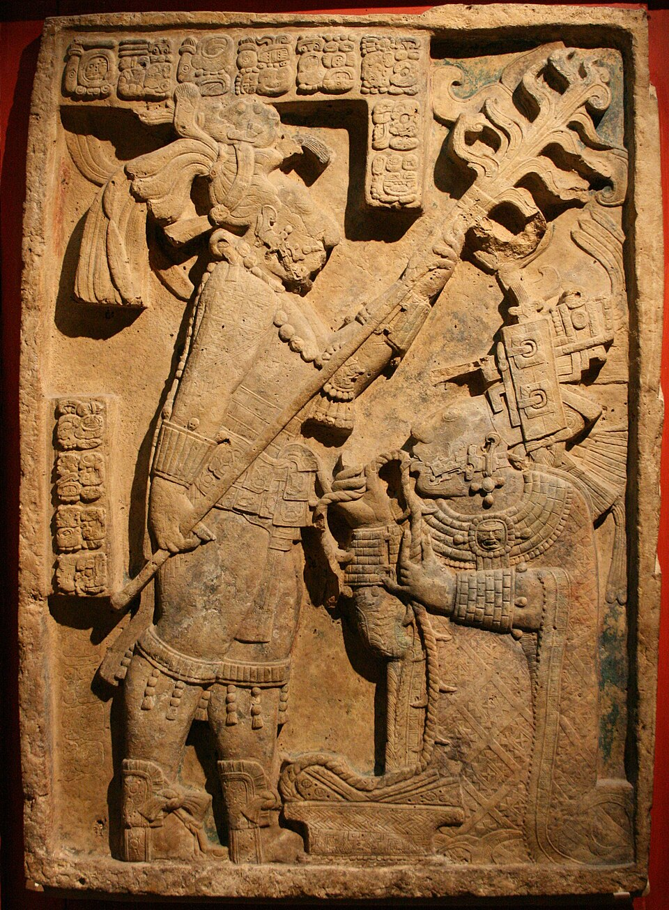

The Americas
Indigenous peoples of the Americas developed monumental architecture, textiles and metalwork long before European contact, and their traditions continue today.
Mesoamerica
Olmec colossal heads (~1200–400 BCE), Maya stelae and murals, Teotihuacan and the Aztec Templo Mayor.
Andes
Chavín, Nazca (with its geoglyphs), Moche ceramics and Inca stonework such as Machu Picchu. Andean textiles encoded status and meaning.
North America
Pueblo pottery, Northwest Coast totem poles, Plains hide painting and Mississippian mound builders at Cahokia.
Colonial and modern
Colonial Baroque, 20th-century Mexican muralism, and today's Indigenous and Latinx artists.
Featured works

c. 725 CEYaxchilan Lintel 24
Unknown artist · Sculpture
c. 1450Machu Picchu
Unknown artist · Architecture
 1935–37
1935–37Fallingwater
Frank Lloyd Wright · Architecture
1939The Two Fridas
Frida Kahlo · Painting
1942Nighthawks
Edward Hopper · Painting
1950Autumn Rhythm (Number 30)
Jackson Pollock · Painting
1962Campbell's Soup Cans
Andy Warhol · Painting
1982Untitled (Skull)
Jean-Michel Basquiat · Painting
2021Everydays: The First 5000 Days
Beeple · Installation & Digital